Primary communication tools
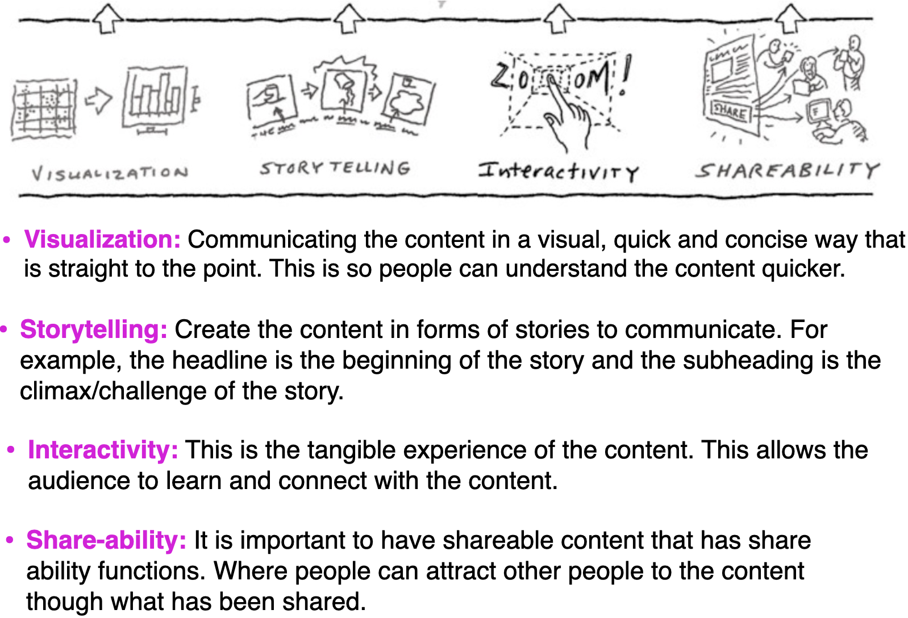
DSAN 5200-03: Advanced Data Visualization
Often, your jobs as a data scientist is to be an effective communicator
There is more to communication than numbers on a paper
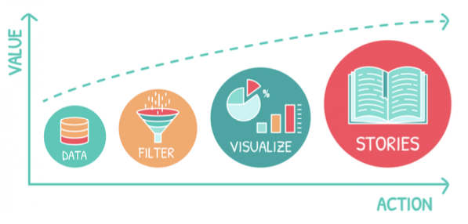
Data stories appear to be most effective when they have constrained interaction at various checkpoints within a narrative, allowing the user to explore the data without veering too far from the intended narrative.
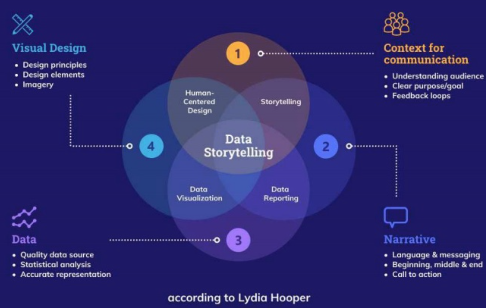
https://venngage.com/blog/data-storytelling/
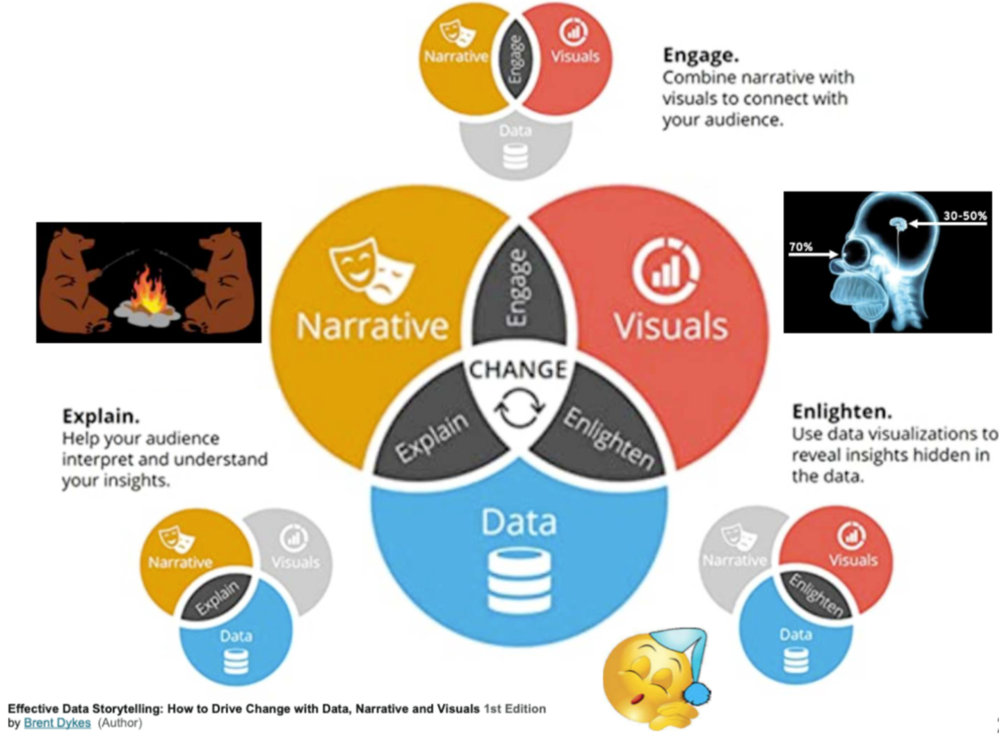
It is not merely:
a technical matter of creating an image
designing the right chart
Rather it is:
The story is the culmination of distilling the information and insights gathered through the analytic process
It is often represented by a series of well chosen and developed visualization, but these visualizations reflect intentional design choices based on your understanding of the data, the story and your audience
Story components
To tell a story you have to define a story
A story is how what happens affects someone who is trying to achieve what turns out to be a difficult goal, and how they change as a result
Whether driven by time or logic, stories are typically is linear
Beginning, middle and end
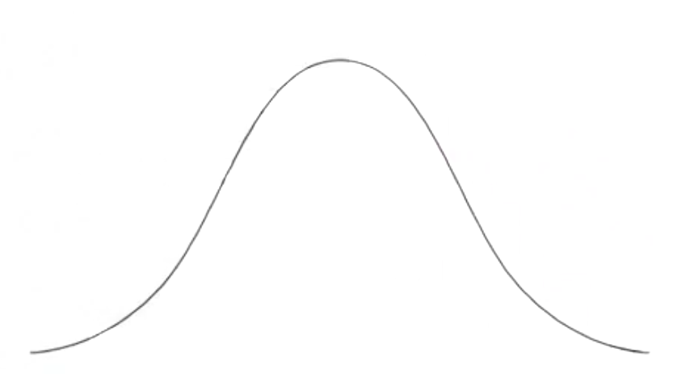
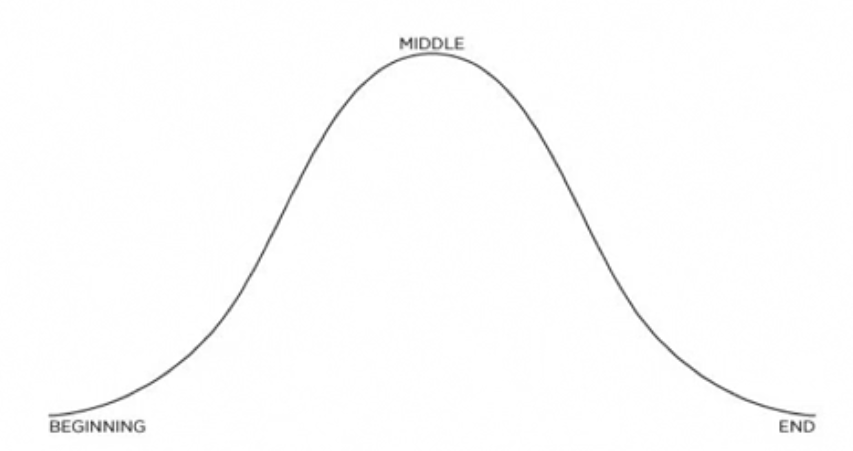
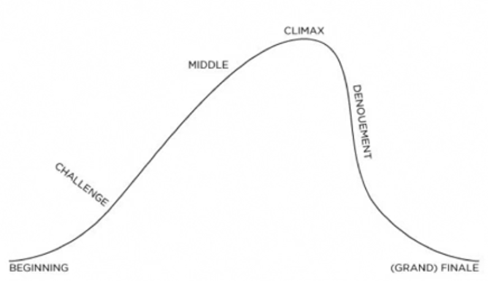
Every story is linear, with a well-defined beginning, middle and end. However, those pieces don’t have to take equal time.
Stories have pacing, which creates tension and interest, and makes the storytelling more compelling.
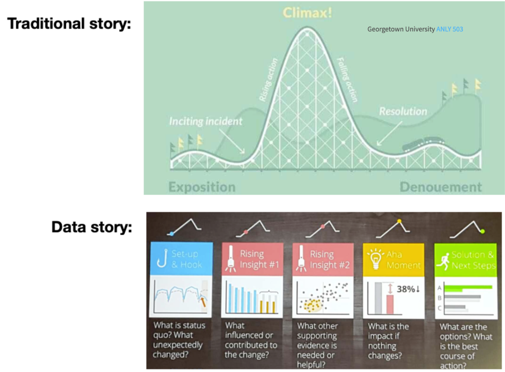
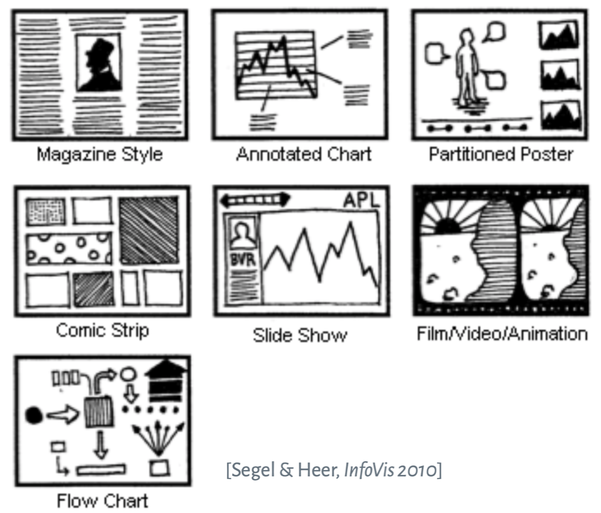
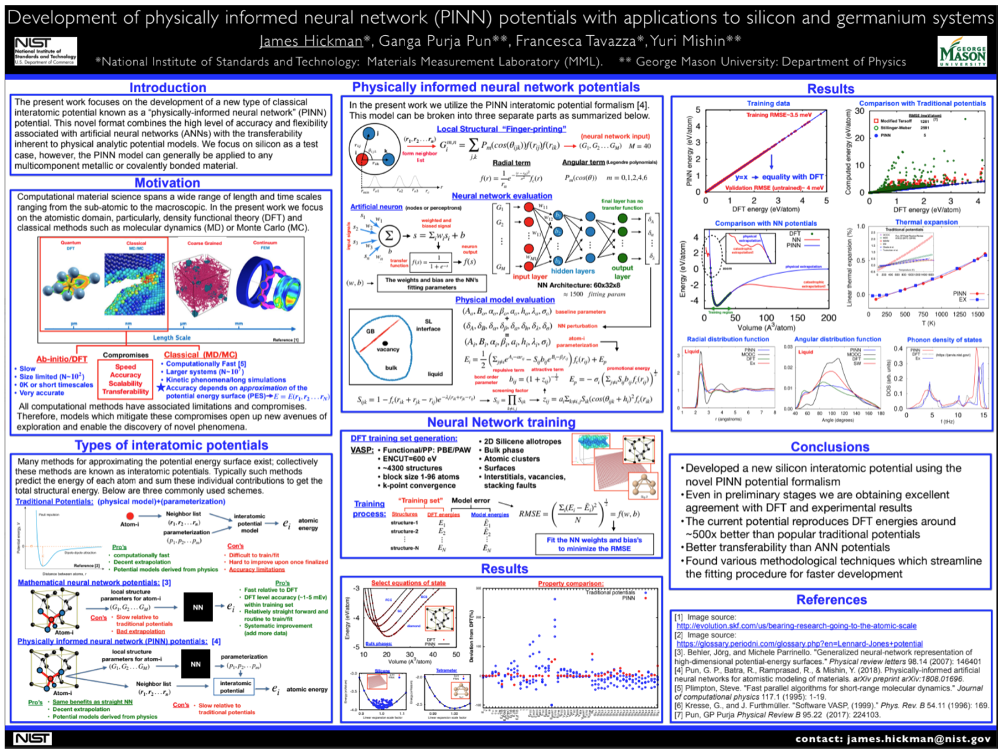
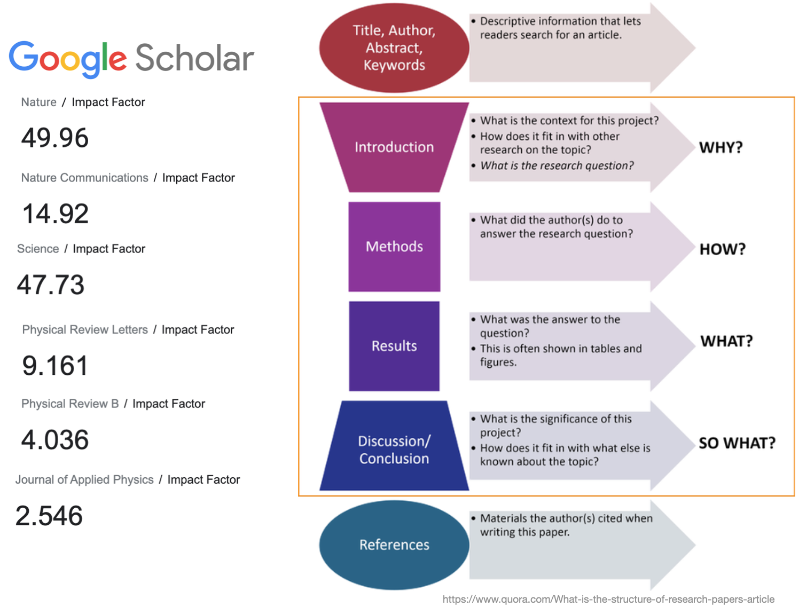
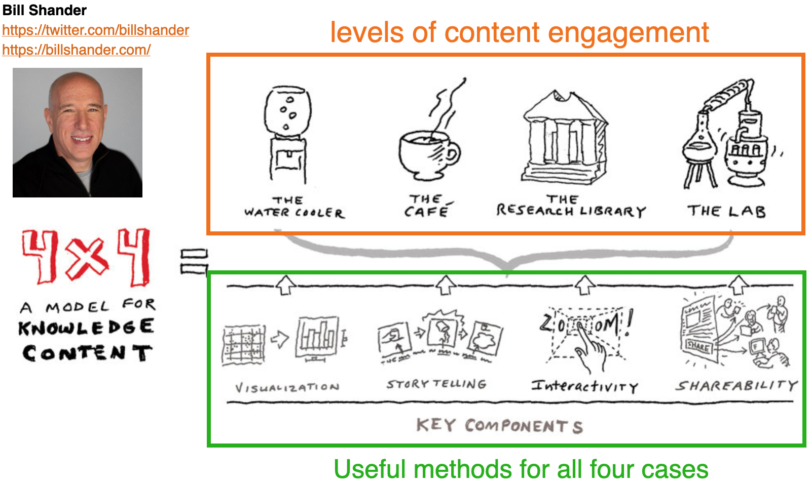
Bill Shander talks about different levels of content engagement. We’ll describe these in the next few slides
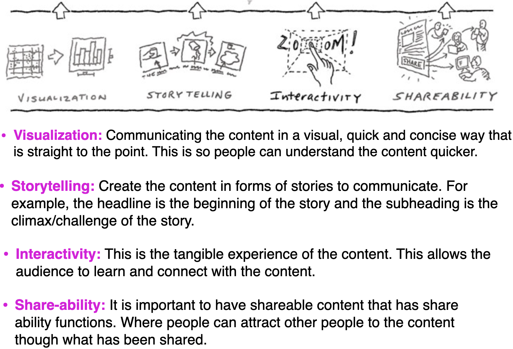
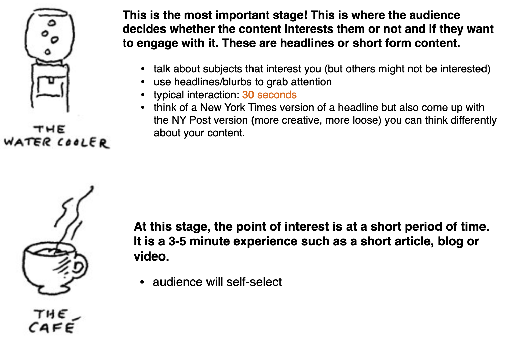
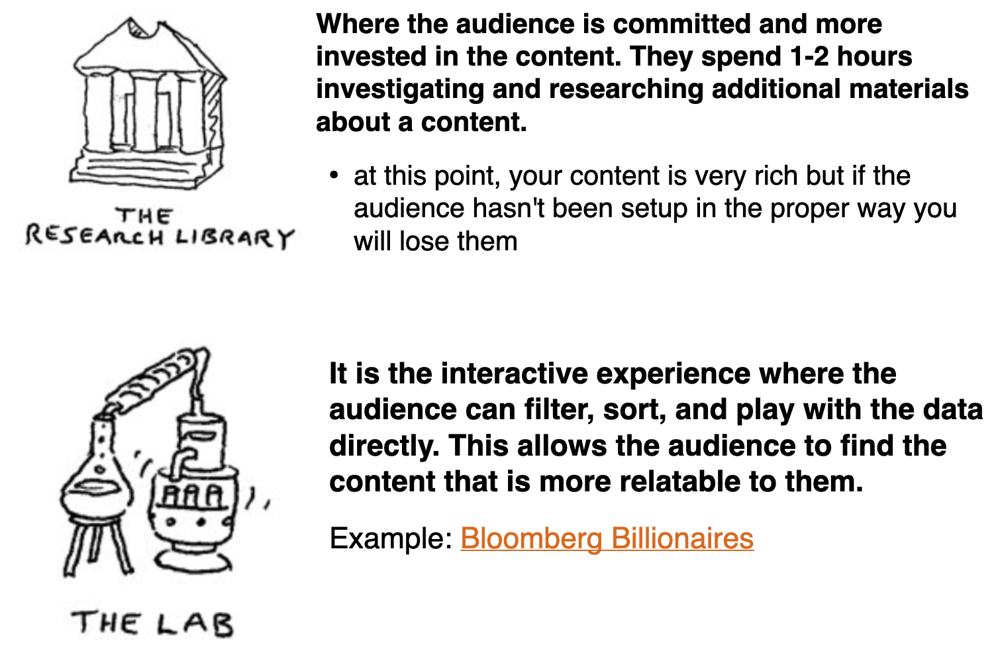
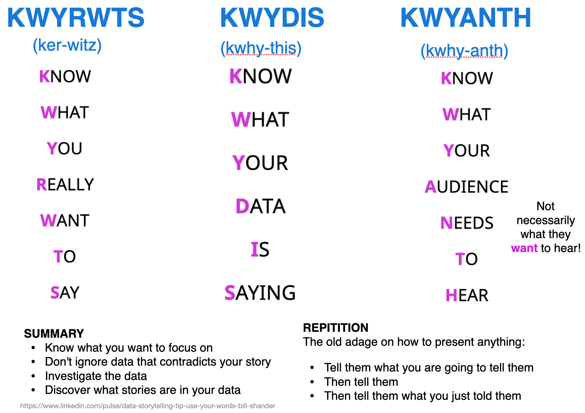
The old adage on how to present anything:
https://medium.com/nightingale/the-past-present-and-future-of-scrollytelling-10dd37dc1003
https://opensourcelibs.com/lib/rolldown
https://elementor.com/blog/guide-to-scrollytelling/
https://www.visualstorytell.com/blog/what-is-visual-storytelling
https://mathisonian.github.io/idyll/scaffolding-interactives/
https://idl.cs.washington.edu/
https://distill.pub/2020/communicating-with-interactive-articles/
Let’s take a 10 minute break before moving onto the lab.
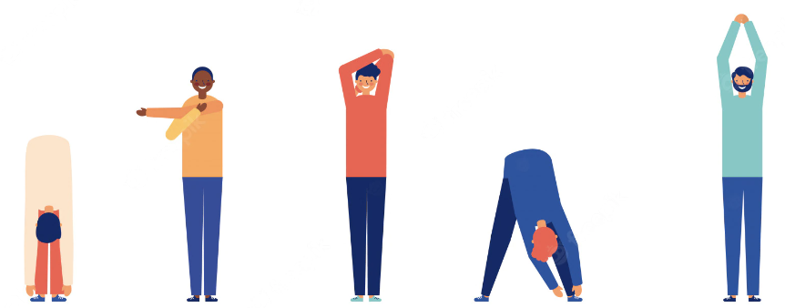